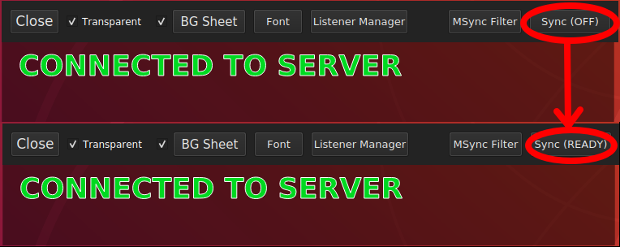

First of all, remember that live translating takes a lot of brain power and has no means to recheck. So expect mistakes and don't take everything at face value.
The Listener's side is straight-forward and easy.
1. If you use desktop, you'll start here. Just go ahead and click stream session.
2. If you can't find the room that you want, try check the "Empty Room" box.
3. Search for the room that you want by name or by link.
4. Pick a room and you'll see this message if you're successfully connected.
5. If you're using android, you'll have to use SPLIT SCREEN for maximum enjoyment.

1. You can call an extra setting panel if you move your cursor to the upper area of the app window.
Or tap if you're using mobile client.
2. Extra panel contains a lot of extra features.
3. Listener Manager menu.
4. Comparison between with/without transparent background or with/without background sheet.
1. Choose "MSync" and then click enter if you only want to sync with livechat.

2. Or if you're already listening to a stream, click Sync button on the top right corner.
3. Click Sync button in the extension.
And you're done, you can apply filtering and custom styling explained in the following section.
1. Click MSync Filter in the extra panel.

2. Here you can set keywords for filtering as well as font colour and outline for the display.

1. Open the desktop app and click open archive.

2. Search archive by room or by link.tags.

3. Pick a session
4. Pick the starting point of the translation.
5. And you're set and ready to go.

6. Extra menu on the archive viewer.

1. Click Sync button on the top right corner.

2. Click Sync button in the extension.

3. And as you can see, the translation is now synchronized with the video.